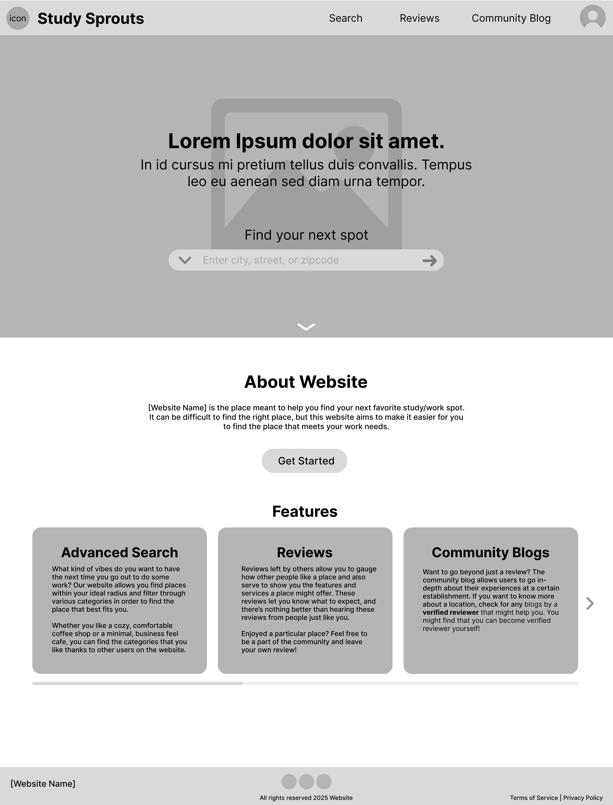

Alexis Mabbun: Study Sprouts Wireframes
Homepage Wireframe
Sign-up Page Wireframe

Pros: Some of the advantages of sketching your wireframes is that it can be a lot quicker to make the wireframes
because there is no need to learn a different software and you can get started right away. You can also be a lot
more flexible with potential things you might add, since there are no restrictions to what elements you are limited
to added compared to a software, which isn't guaranteed to have everything you might want to include. There's also
room for less distraction since you won't necessarily have all the options for making everything look pretty and get
caught up in visual parts that don't need too much attention at the wireframing phrase.
Cons: However, some of the cons of sketching compared to using a wireframing software is that it's not easily
transferrable to other platforms beyond just your sketch on paper. This makes it harder to edit or make changes to what you had,
and if you wanted to make it easier by putting it into a software, you'll still have to put in the work again which can be
annoying. Sketching is also not ideal because you can't really communicate your work that well compared to a software, where
you can link you elements together (demonstrating flow of your website and interactivity) and there's overall more structure
for standardization and understanding of what an element represents/is supposed to do. It's also just harder to collaborate
with others if you're doing sketches. Online softwares make collaborations easier, guarantees you're working with the same
tools, and simultaneous working.
I think that the best type of wireframing style for my project would be a medium fidelity wireframing on a digital software. This would work best because medium fidelity allows for me to demonstrate how one might interact with my website and get one place to another. I can also show how elements are connected or their functions while also not having to overwhelm myself or others with visual aspects. I am also prone to changing my ideas so not having something too detailed will help me not waste my time on things I'm not sure of or feel like I need to commit to a design choice just because I already have it made. So digital softwares are also easier in that case as well, where I don't have to put in more effort that is needed if I change my mind on something.